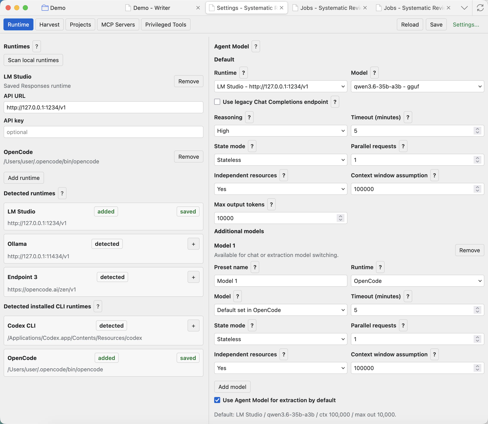
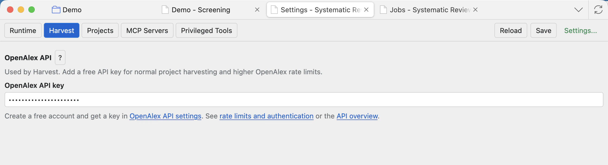
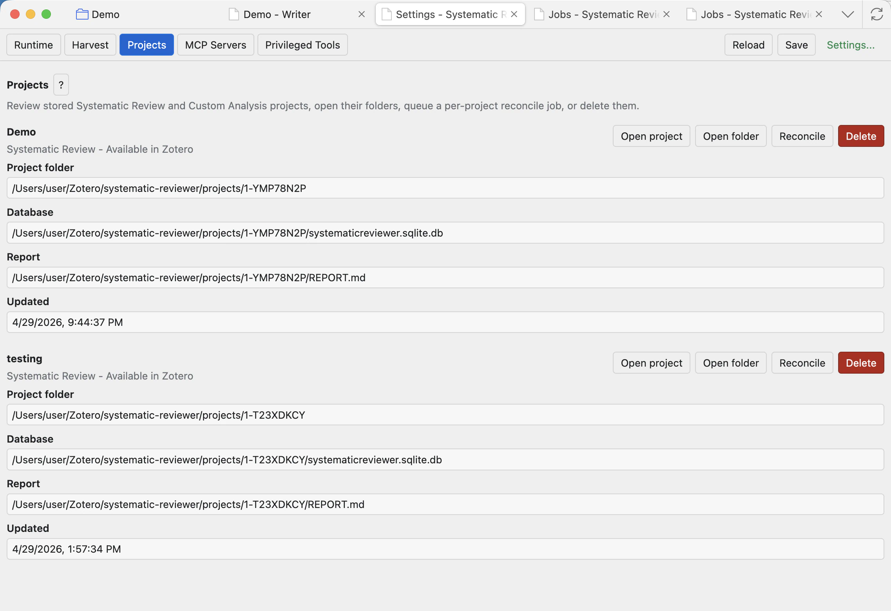
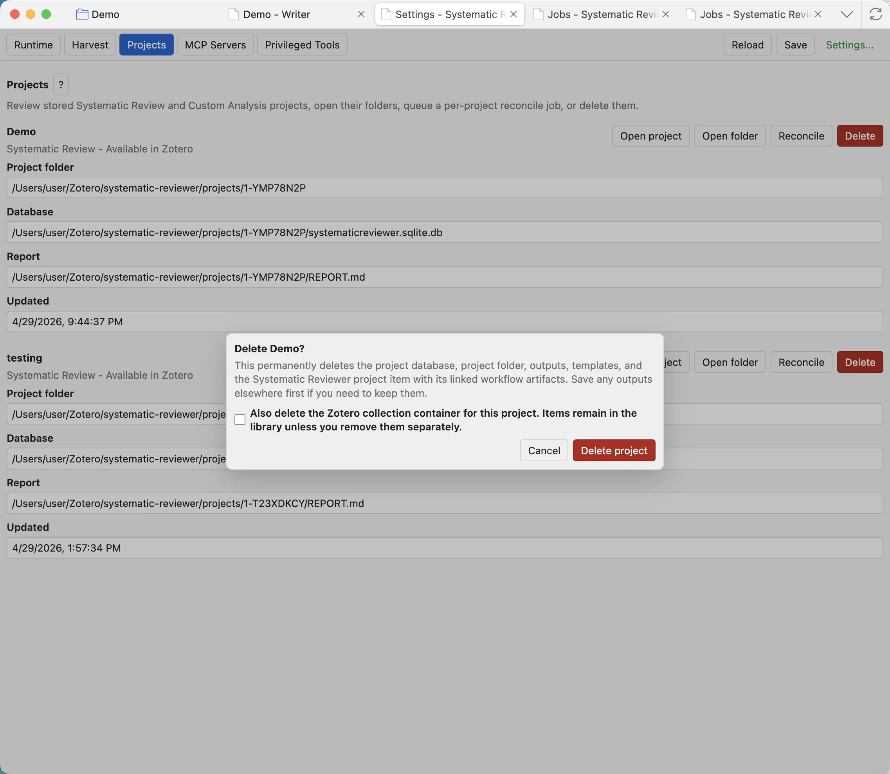
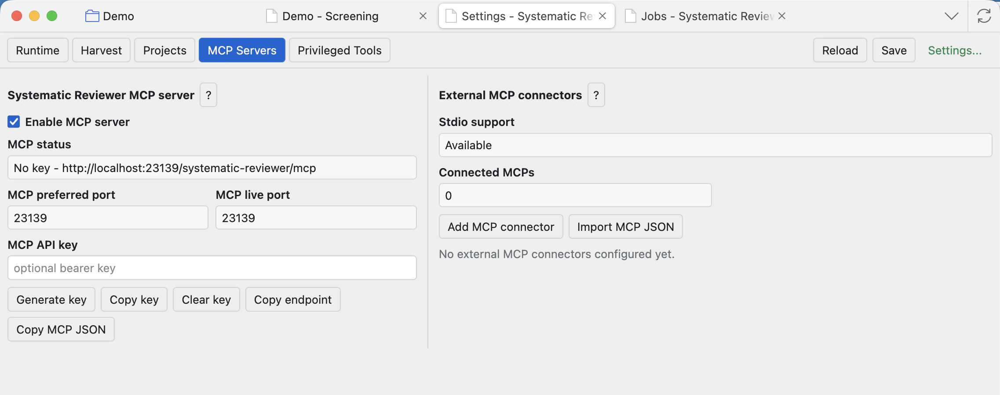
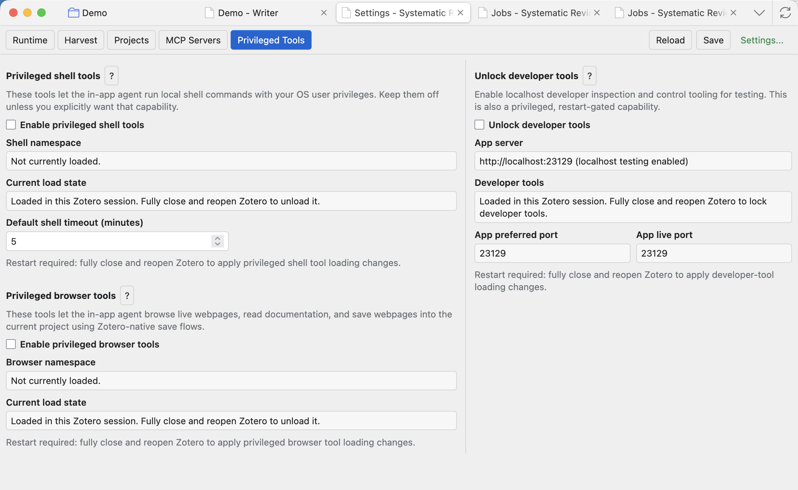
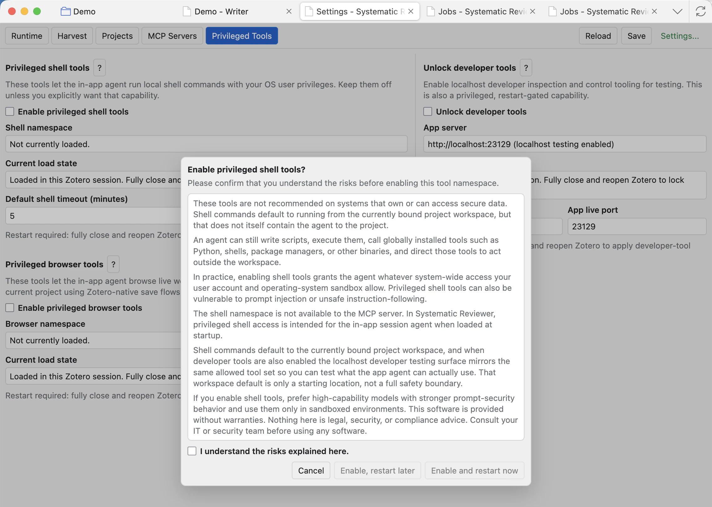

Settings
Settings controls runtimes, model roles, OpenAlex, stored projects, MCP servers, privileged tools, and editor/preview appearance.

Runtime and model presets
Runtime settings decide which model backends the project can use. Scan only detects runtimes that are already installed or reachable; it does not install models or create accounts for you.
Scan local runtimes
Looks for common local APIs and installed CLI runtimes. Run it after installing or updating a runtime, then use + or the role buttons to save only what you want the plugin to use.
Add runtime
Adds an API endpoint manually. Use the base URL your provider gives you, usually ending in /v1, plus an API key only when required.
Saved Responses runtimes
Stores API base URLs and optional API keys for providers that expose a Responses-compatible endpoint. New API runtimes default to Responses.
Saved CLI runtimes
Stores trusted installed CLIs, such as Codex or OpenCode, for model-backed chat and extraction through the plugin bridge.
Agent model
The default model for chat and agent workflows. Additional agent presets can be selected from the chat Model modal.
Data extraction model
The default model for extraction jobs. It can be separate from the chat model or inherit an agent model preset.
PDF/VLM model
The model used for page-image or vision-language conversion when the PDF mode needs vision. Fast PDF does not need this model.
Embeddings model
The model used by the Embeddings tab. It uses the embeddings endpoint rather than the chat/extraction route.
Legacy Chat Completions checkbox
Use only for a specific API model when the provider says that model is exposed through Chat Completions or is not available through Responses. This applies to that model preset, not the whole runtime.
Reasoning
Default sends no reasoning field. Explicit values depend on provider and model support. If you are unsure, leave it on Default.
State mode
Stateless resends the managed chat context and lets the app control truncation. Stateful asks the server to keep the chain. Local runtime testing usually works best with Stateless, and CLI runtimes are stateless only.
Context window assumption
Set the real loaded context length for the model. The app uses it for token budgeting and sliding-window truncation, so an incorrect value can make long chats or automations fail.
Independent resources
Choose Yes only when that model does not compete with other configured models for the same GPU, CPU, memory, or runtime queue.
Parallel requests
Controls how many jobs the runtime can handle at once. Keep it low unless you know the runtime and hardware can run multiple requests reliably.
Suggested local model examples
The help overlays list example GGUF conversions that may be useful with runtimes supporting llama.cpp-based engines and compatible API endpoints. These are examples only; Systematic Reviewer and OpenResearchTools are not affiliated with model providers, Qwen, or LM Studio.
- Agent examples:
openresearchtools/Qwen3.6-35B-A3B-GGUF,openresearchtools/Qwen3.6-27B-GGUF. - Extraction examples:
openresearchtools/Qwen3.6-27B-instruct-GGUF,openresearchtools/Qwen3.6-35B-A3B-Instruct-GGUF. - Embeddings example:
openresearchtools/Qwen3-Embedding-8B-GGUF, exposed through an embeddings endpoint such as/v1/embeddings. - PDF/VLM example:
openresearchtools/Qwen3.5-4B-Instruct-GGUF, used only when the chosen PDF mode needs a vision model.
If you use external APIs, hosted providers, or CLI runtimes, especially subscription-based services, confirm that the provider terms allow use from external applications and permit the intended review, automation, and data-extraction workflows.
Harvest and OpenAlex
The Harvest settings tab stores the OpenAlex API key and points to OpenAlex documentation. OpenAlex is an open scholarly metadata index covering works, authors, sources, institutions, topics, funders, and related research metadata. Systematic Reviewer uses it in Harvest to search scholarly records, collect candidate studies, and add metadata-backed items into the project workflow.

An API key is optional for opening the UI, but recommended for normal project harvesting because it identifies requests and gives access to OpenAlex authenticated rate limits. Systematic Reviewer and OpenResearchTools are not affiliated with OpenAlex; use the linked OpenAlex documentation for account, authentication, and rate-limit details.
Projects
Projects lists plugin-managed project records. This Settings view is project-independent, so it can manage stored projects even when another project is currently open.

Open project
Opens that stored project in the project workspace. It is disabled if the linked Zotero collection is missing.
Open folder
Reveals the project folder on disk, including the database, settings, report, log, snapshots, outputs, templates, and project-managed files.
Reconcile
Queues a background job to repair and refresh stored project links, Zotero project artifacts, and workflow files from project metadata. Track progress in Jobs.
Delete
Opens a confirmation dialog. It is destructive and should be used only when you no longer need the project storage.

MCP servers
The built-in Systematic Reviewer MCP server can expose project tools to external MCP-compatible clients. User-added external MCP servers are third-party processes or services. They may read, write, or act according to their own behaviour and the permissions of your operating system account.

Built-in MCP server
Starts Systematic Reviewer's own optional endpoint so trusted local agent clients can connect to the Zotero project environment.
MCP API key
Leave blank for local callers without bearer authentication, or set a key to require Authorization: Bearer <key>.
Copy endpoint / MCP JSON
Copies connection details for an MCP client. Save settings first so the current endpoint is accurate.
External MCP connectors
User-added third-party MCP servers may provide tools, resources, or prompts. Depending on the server, they may read or write files, run commands, access local services, call remote APIs, or send data outside the machine.
Privileged tools
Shell, browser, and developer tools are restart-gated. Enabling a privileged tool group shows a warning and requires a Zotero restart before that tool surface is loaded. Disable them when you do not need them.
Privileged shell tools warning. These tools are not recommended on systems that own or can access secure data. Shell commands default to running from the currently bound project workspace, but that does not itself contain the agent to the project.
An agent can still write scripts, execute them, call globally installed tools such as Python, shells, package managers, or other binaries, and direct those tools to act outside the workspace.
In practice, enabling shell tools grants the agent whatever system-wide access your user account and operating-system sandbox allow. Privileged shell tools can also be vulnerable to prompt injection or unsafe instruction-following.
The shell namespace is not available to the MCP server. In Systematic Reviewer, privileged shell access is intended for the in-app session agent when loaded at startup.
Shell commands default to the currently bound project workspace, and when developer tools are also enabled the localhost developer testing surface mirrors the same allowed tool set so you can test what the app agent can actually use. That workspace default is only a starting location, not a full safety boundary.
If you enable shell tools, prefer high-capability models with stronger prompt-security behavior and use them only in sandboxed environments. This software is provided without warranties. Nothing here is legal, security, or compliance advice. Consult your IT or security team before using any software.


Privileged shell tools
Let the in-app agent run local shell commands with your OS user privileges. Commands start from the current project workspace, but that is not a full safety boundary.
Privileged browser tools
Let the in-app agent open live webpages, read documentation, follow links, and save webpage evidence into the current project using Zotero-native save flows.
Developer tools
Unlock localhost developer inspection and the dev-only testing surface. If shell or browser tools are also enabled, the developer surface mirrors the same allowed tool set.
Restart now / later
Tool bundles are loaded only at app startup. Restart now applies immediately; restart later saves the preference for the next full Zotero restart.
Editor/Preview page colour
When Zotero is in dark mode, the Editor/Preview page setting can switch the on-screen Writer page between a light page and a dark page. This is a display preference for editing and previewing; exports keep their export formatting.
Common checks
- Click Save after changing settings that are meant to persist.
- Run Scan local runtimes after installing or updating a local runtime.
- Use the help question marks for model, runtime, MCP, and privileged tool warnings before enabling advanced features.
- Confirm third-party provider terms before sending research material to external APIs, hosted models, CLI runtimes, or MCP servers.